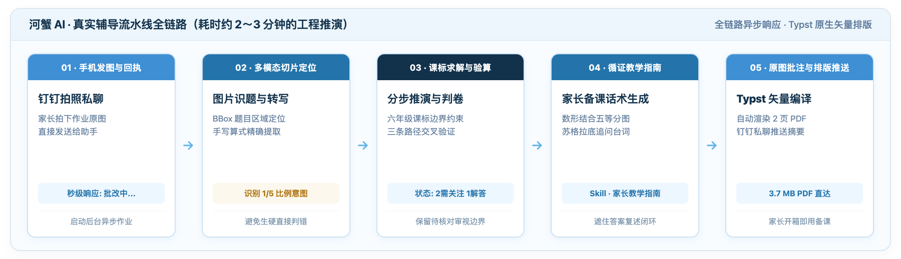
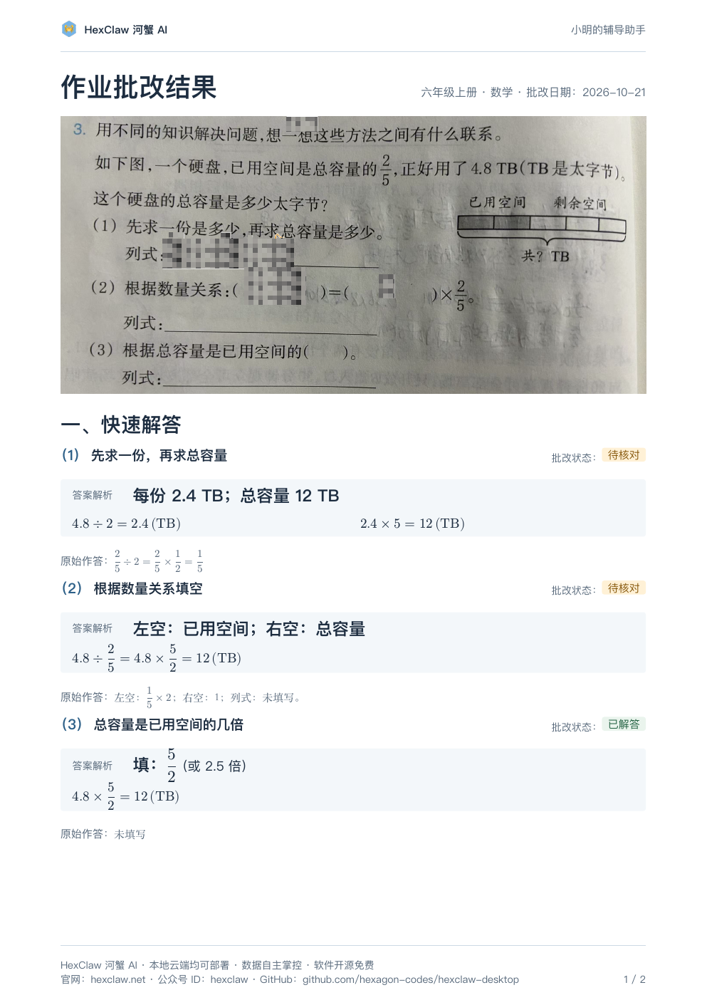
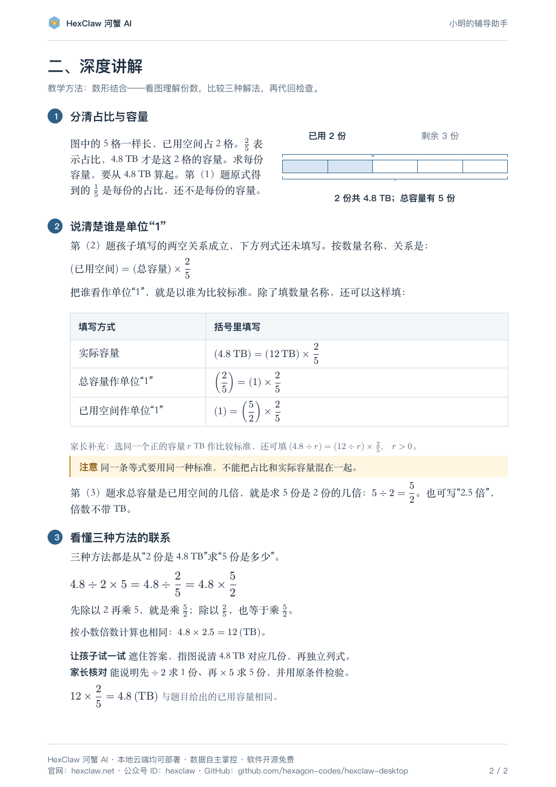
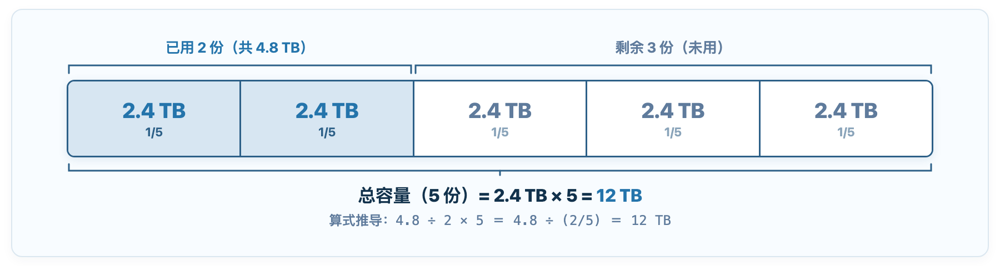

The problem is simple: “A hard drive has used 2/5 of its total capacity, and that used space is exactly 4.8 TB. What is its total capacity?”
The answer is 12 TB. An adult sees 4.8 ÷ (2/5) = 12 and understands immediately. But a sixth-grader sitting at the desk that evening has written 2/5 ÷ 2 = 1/5 in the notebook and is stuck, looking up at you.
This is when many parents get impatient: “Dividing by a fraction means multiplying by its reciprocal. Didn’t you memorize the rule?” But the child’s problem is not division. They have not understood the relationship between the given 4.8 TB and 2/5. What exactly does the 1/5 they calculated represent? If a language model simply supplies the answer, the child can copy it and finish. To untangle the reasoning, parents need a sequence of steps they can actually explain aloud.
We use a real sixth-grade mathematics homework example, reviewed by a human, to show how HexClaw delivers a lesson report to parents through DingTalk on their phones, then turns a teacher’s use of visual models and Socratic questioning into words parents can use at the desk.
The central argument:
Homework tutoring is about helping parents prepare a lesson, rather than writing the child’s homework. A trustworthy tutoring system has three jobs: ① Understand the child’s work first—which step is right, and where they got stuck; ② Turn the mathematics into diagrams and questions—connect numbers with visual models and proceed step by step; ③ Leave the teaching with the parent—the report supplies the steps, while a person teaches face to face.
The 30-second version:
Send a photo from your phone → DingTalk replies “Grading…” → after 2–3 minutes, receive a grading summary and a two-page lesson PDF. The first two subquestions remain “Needs checking”; the unanswered third subquestion receives reference reasoning only. The report explains the unitary method through a tape diagram, checks understanding with Socratic questions, and keeps each child’s learning records in a separate profile. This article uses one real, anonymized example that has been manually reviewed.
At the scene: take a photo and receive a lesson report a few minutes later
When helping with homework in the evening, few parents sit down at a computer and type commands. The natural action is to take a photo with a phone and send it in a private chat.
In the actual experience, HexClaw does not behave like a generic chatbot that instantly dashes off a text reply. After the homework photo arrives, the assistant first sends “Grading…”. Once the background process finishes its multiple reasoning stages, the DingTalk conversation receives a structured grading-summary card, together with a 3.7 MB, high-resolution lesson PDF:
Look closely at the processing trace at the bottom of the card: “Processing summary: recognize questions from the image → solve the questions → grade the homework → prepare the parent guide → annotate the original image.” A dedicated problem-solving Skill runs underneath. Why does this take two or three minutes of reasoning, rather than a single Completion producing text? Because the background process runs a closely connected pipeline:

The engineering chain has five steps:
- Locate multimodal regions: instead of blindly applying OCR to the whole page, isolate each question’s bounding box (BBox) and extract the handwritten calculations precisely.
- Solve and verify within curriculum constraints: stay within sixth-grade primary-school knowledge, without skipping steps or using advanced middle-school algebra, and have the solver cross-check independently.
- Grade the homework: distinguish “Needs checking” from “Solution provided,” preserve the reasoning a child has already begun, and avoid mechanically marking it with a red cross.
- Generate evidence-informed teaching guidance: invoke the K12 teaching Skill to arrange tape diagrams and Socratic follow-up questions automatically.
- Annotate, typeset, and deliver: mark the original homework image, then use the Typst typesetting engine to compile the text and images into a high-resolution 3.7 MB PDF and send it back to DingTalk with the summary card.
Now look at the grading details: “3 questions in total · 0 correct · 2 need attention · 1 solution provided.” Why not simply use a large red cross? The child’s draft is not random scribbling. Their reasoning has already made it halfway.
If a model fills the chat with dozens of Markdown lines, parents have to scroll up and down a narrow phone screen to find the relevant part. It is difficult to hold the phone in one hand and point to a question with a pen in the other. Compiling the annotated image, layered solutions, and suggested questions into a standard two-page PDF lets parents open it and prepare the explanation one-handed, without disrupting the tutoring session.
Page one: understand the child’s work and clarify three solution methods
Open the report’s first page. On the left are the real homework photograph and a transcription of the handwriting; on the right is an organized explanation of the solutions:

📝 The original problem and its three subquestions:
[Main problem] A hard drive has used 2/5 of its total capacity, exactly 4.8 TB. What is the drive’s total capacity in terabytes?
Question (1): First find the capacity of one part, then find the total capacity. Calculation: ________
Question (2): Use the quantitative relationship: ( ) = ( ) × 2/5. Calculation: ________
Question (3): The total capacity is ( ) times the used space. Write the calculation: ________
Comparing the original questions with the child’s work reveals two tutoring traps parents can easily fall into:
- For question (1), the child wrote
2/5 ÷ 2 = 1/5: because the question explicitly asks them to find one part first, they divided 2/5 by 2. Many parents immediately react: “Wrong! How did you get 1/5?” But the calculation is logically consistent. The child has found that one part is one fifth of the total capacity—a proportional share. They have simply not yet converted that share into an actual capacity: 4.8 ÷ 2 = 2.4 TB. Starting with a red cross only leaves the child feeling unfairly judged. - For question (2), the relationship is
( ) used space = ( ) total capacity × 2/5: the task asks for an equality. The child filled in1/5 × 2on the left and1on the right. At first glance, a parent may wonder what this means. The child is thinking entirely in proportions: total capacity is the unit whole, “1,” and the used space is two lots of 1/5, or 2/5. The proportional equality in their mind is valid; they have just not substituted the actual 4.8 TB yet. Instead of mechanically marking this wrong, the system honestly labels it “Needs checking,” protecting the child’s emerging reasoning rather than dismissing it. - Question (3) was left blank: asked for a multiplicative relationship, the child got stuck and wrote nothing. The report’s green “Solution provided” means only that the system has supplied a reference answer—5/2 times, or 2.5 times. It does not turn “the AI can solve it” into “the child has mastered it.”
Starting with the model’s original output, a human organized the report and added an explicit comparison of the three methods. The explanation prepared for parents offers these three routes:
Route one: find one part, then five parts. 4.8 ÷ 2 = 2.4 TB, then 2.4 × 5 = 12 TB. This unitary method is the most intuitive place to begin.
Route two: work backward from the quantitative relationship. used = total × 2/5 → total = 4.8 ÷ (2/5) = 12 TB. This is the standard textbook approach: form an equation and use the inverse operation.
Route three: calculate directly from the multiple. Five parts are 2.5 times two parts → 4.8 × 2.5 = 12 TB. This suits a child ready to think one step further.
Page two: a teacher’s explanation through visual models and Socratic questioning
If the child is still stuck, turn to page two. This page has also been organized by a human. It avoids a pile of educational jargon and turns evidence-informed teaching approaches into concrete actions:

1. Connect numbers with a visual model: give each abstract number a place
Do not just recite division rules over the draft paper. Look at this tape diagram with five equal parts:

The parent points to the diagram and says: “The entire hard drive is divided into five boxes. These two colored boxes are the used space, holding 4.8 TB. How much does one box hold?”
Looking at the picture, the child can see the reasoning: two boxes hold 4.8 TB, so one holds 4.8 ÷ 2 = 2.4 TB; all five boxes hold 2.4 × 5 = 12 TB. The diagram clearly separates the proportion—two boxes—from the actual capacity—4.8 TB—making the relationship much easier to grasp.
2. Socratic follow-up questions: ask one question and listen to one step
Often a child nods along with an explanation, says they understand, and still gets the next attempt wrong. The report gives parents questions that check the reasoning from the other direction:
“When you calculated 4.8 ÷ 2 just now, which quantity did your answer represent?”
Wait until the child points to the diagram and says, “The capacity of one box.” Then ask: “Why do we multiply by five afterward?” Only when the child can say, “Because the entire hard drive has five boxes,” has this check of understanding come full circle.
3. Retrieval practice: cover the answer and let the child explain independently
For the final step, cover the reference answer with your hand and let the child write the calculation again from the blank question. Then help them substitute the result back: does 12 × 2/5 equal the given 4.8? Once checked, the tutoring session is finished.
For a one-child family, this clear, visual two-page report already gives parents material to prepare calmly at the desk. But many households with two working parents and more than one child soon encounter another problem: the eldest is learning fraction multiplication and division in sixth grade, while the younger child is only starting addition and subtraction. Should they share one assistant and one chat, mixing their context, previous mistakes, and learning profiles?
Families with several children: a dedicated tutoring assistant for each child
In HexClaw Desktop, you can configure a separate channel and assistant for each child:
As the screenshot shows, the system can host “Eldest child (grade six),” “Second child (grade four),” and “Third child (grade one)” at the same time. These names and grades are illustrative. Each child has a separate DingTalk private-chat channel, a learning-memory database, and curriculum-scope constraints. By design, the sixth-grader’s fraction revision is not sent to the youngest child, who has not reached that stage. Each child’s mistakes enter their own local Ebbinghaus review queue.
An honest account of this example’s limits
After discussing the mechanism, here are the practical boundaries of the current approach:
- This is a real, anonymized record that has been manually reviewed. The original task results came from a multimodal model actually interpreting and solving the photographed homework. But a human corrected the blank-field layout, made the three-method comparison explicit, and organized the advice for parents to check understanding. We retain the model’s “Needs checking” labels and the fact that question three was blank. The polished layout is not presented as a fully automatic, end-to-end product.
- Step-by-step model reasoning takes time, and the interaction is asynchronous. Visual region processing, code-based verification, and PDF composition take 2–3 minutes end to end. The system first sends “Grading…” after receiving the question. It does not return the final result instantly; allow a short wait.
- A clear answer does not mean the child has learned it. The first two questions remain “Needs checking,” and the third was unanswered. The system provides a scaffold for parents to prepare an explanation. This cannot support claims that “AI guarantees higher scores” or “the child has fully mastered the topic.”
- With a cloud model, the question image is sent to the provider. When a third-party cloud model is configured, the image and context needed for processing go to that provider. With a local model, the data stays on the host machine. Choose the deployment according to your privacy needs.
- Separation between children currently depends on separate channels and Skill configurations. Each child is bound to a separate DingTalk bot and learning profile, with contexts kept separate by design. The strength of that separation depends on correct configuration. There is currently no automated mechanism to detect information leaking between children.
- One question does not establish general performance across all subjects. This example is a sixth-grade mathematics word problem involving fractions. With messy handwriting, complex auxiliary geometry lines, or open-ended questions across subjects, OCR accuracy and solving robustness still depend on the model and the lighting.
The planned next steps are to incorporate this lesson-report generation logic into an automated export pipeline, then complete spoken-explanation audio comparison and automatic generation of variant practice sheets from mistaken questions. The desktop app is also planned to add checks that the recognized question stem is authentic, reducing the risk of treating unrelated draft marks as part of the question. These features are not yet complete.
Back to the problem: put 4.8 TB into those two boxes
The most dependable place to start is by drawing five equal parts. Put 4.8 TB firmly into the first two boxes, help the child find 2.4 TB per box, and then count all five. Once the child can point this out in the diagram, return to the opening rule: dividing by a fraction means multiplying by its reciprocal. Here, 4.8 ÷ (2/5) is 4.8 × (5/2); route one’s “divide by two, then multiply by five” is exactly that reciprocal split into two steps. The answer is already on the paper. What the parent most needs to hear is the child’s reason.
Give every number a place in the diagram first,
then let every calculation have an explanation.
Previously in the HexClaw series
▸ A calmer homework hour: a step-by-step guide to tutoring with HexClaw
A complete operational guide, from creating a tutoring assistant to sending homework and viewing results. It covers the setup behind this article’s phone-photo submission and DingTalk connection.
▸ A calmer homework hour with HexClaw: engineering the first K12 lighthouse scenario
A detailed look at the two-layer evidence-informed teaching approach, calculation-verification evidence chain, and scenario-package architecture underlying this article’s lesson PDF constraints.
Sources
- Grading and Explaining the Hard-Drive Capacity Problem: An Anonymized Real Homework Record: the original answers, statuses, calculations, and two-page display. The original task was dated 2026-10-21; the public example was manually reviewed and laid out again.
https://hexclaw.net/assets/downloads/hexclaw-k12-homework-example.pdf - K12 Teaching Methods and Tutoring Scenarios: the meaning and application limits of visual mathematical models, Socratic questioning, and retrieval practice. The source index in that material lists the original references for each method.
https://hexclaw.net/assets/downloads/hexclaw-k12-teaching-methods.pdf - China’s Ministry of Education, Mathematics Curriculum Standards for Compulsory Education (2022 Edition): the explanation of “geometric intuition” within primary-school “Number and Algebra” competencies—using diagrams to describe and analyze mathematics problems and build intuitive models.
- Roediger, H. L., & Karpicke, J. D. (2006). The Power of Testing Memory: Basic Research and Implications for Educational Practice. Perspectives on Psychological Science. Empirical research on the role of retrieval practice in cognitive retrieval and long-term memory consolidation.
- HexClaw Product Introduction and K12 Feature: the product’s open-source positioning, local data storage, and scope of application.
https://hexclaw.net/zh/k12
Material verification date: 2026-10-28. The verification covered the public example, source records, and teaching-method materials. It does not establish full automation or a promise of improved student scores. The children’s nicknames in the screenshots are custom names inside the product, not real names.